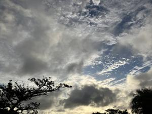
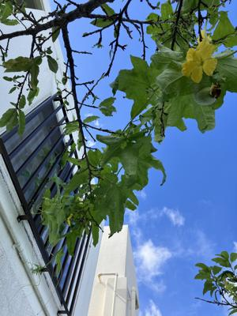

うるがいの話 ある日
最新: ジャックと豆の木【うるがいの話 ある日】とは 一日だけのプログです
『うるがいの話』の最新一日だけのプログで、通信料が少なく経済的だ。カニの画像をクリックすると全ての日付が載る『うるがいの話』サイトを表示します
|
|
【うるがいの話】 うるがい(ｳﾙｶﾞｲ urugai)とは、『もずくがに』の名前でとても大きくなります。 |
|---|---|
|
|
【カミマヤーの話】 猫のことを方言でマヤーといいます。カミマヤー（kamimayaa）とは、神の猫のことです。 |
|
【たながぁの音楽】 たながぁ（ﾀﾅｶﾞｰ tanagaa）とは手長えびのことで、何種類かあり大きいのは車 エビぐらいになります。 |

|
【ぶながぁの話】 ぶながぁ(ﾌﾞﾅｶﾞｰ bunagaa)とは、赤い髪の毛、赤い身体、そして身長は１ｍ２０ｃｍ ぐらい、川の蟹を食べているの目撃された。場所は沖縄県国頭郡大宜味村のと ある村僕の隣近所に住んでいる爺さんから、聞いた話です。 |
|
|
【ギーマの話】 ギーマ(giima)とは、山原の里山に咲くスズランに似た、 花を付けます。実は食べられます、 気が付くと口の周りが紫になっています。 |
2024年10月01日 (火）ジャックと豆の木
15:52

２階の窓にヘチマの蔓が絡んで屋上までいきそうだけど！となぜか私が
怒られる。確かに凄い勢いで伸びている、まるで『ジャックと豆の木』
すぐに、梯子を登り窓に絡んだ蔓を外した。切るのはかわいそうなので
桜の木に絡めた、また、怒られそうだが。

下の子供が、海外への語学留学のため昨日付けで４度目の会社を退職
した。フムフム、・・・。私が、この前やめた会社は８月末まで１０名
求人していたが、社員数はどうなったのかだろうか、ネットで調べたが
６月時点の１３人だった。ただ、私の時、なかった賞与や仕事の内容も
具体的に列挙され順調に成長しているようだ。
ところで、会社名で検索すると一緒に内地に出張した人の、フェイスブ
ックのインデックス内容が表示されていた。卒業した高校名とフォロワ
ー７０名と中味は覗けなかったが。イヤー、ウェブの検索エンジンはヤ
バイ。映画『スノーデン』（米国家安全保障局（ＮＳＡ）の職員だった
１人の青年が行った、米政府による国際的な監視プログラムの存在の内
部告発。）を見たばかり、彼はいまロシア国籍を得てロシアにいる。ウ
ーン、内部告発も大変である。
１５時４５分 ビットコインの総資産 ￥２６、７８８（↑１７１）